AEGIS
A local-first safety layer for AI coding agents. It catches the dangerous command before it runs.
Rust · agent-agnostic · nothing leaves your machine
──────────────────────────────────────────────────────────── ⚠ Aegis hold — This command is catastrophic and cannot be undone. recursively deletes files and directories. This is hard or impossible to undo. rm -rf src [a] allow once [d] deny [r] always allow here ────────────────────────────────────────────────────────────
↑ a real frame from the running tool
> what is it
AI coding agents now run real commands on real machines — rm -rf, git push --force, terraform destroy, drop table — faster than you can read a confirmation. Aegis sits on that one chokepoint: the command line. It warns in plain English before execution, holds the dangerous ones for a one-key decision, makes destructive actions reversible, and keeps a tamper-evident record of everything every agent did.
Agent-agnostic from day one: Claude Code, Cursor CLI, Codex CLI, Qwen Code, Gemini CLI, any custom/MCP agent — and any raw shell — via a native hook, an MCP server, or a $PATH shim. Protection lives at the process/PATH layer, not inside any one tool.
> how it works
AGENT
proposes a command
INTERCEPT
hook · MCP · $PATH shim → one event
DECIDE
Tier-1 rules; Tier-2 model scores the middle
SNAPSHOT + LOG
reversible + hash-chained
SAFE auto-allows on a model-free fast path (~microseconds). CATASTROPHIC is a hard floor. AMBIGUOUS is held for you — or scored against a threshold when you're away.
> watch the flow
Agent proposes rm -rf src → Aegis holds it → you deny → it's on the timeline. (Animated; pure SVG, no JS.)

> the live TUI
A real ratatui app over the live event log — bordered panels, a detail pane, severity colors, and a risk gauge. Navigate, filter, open detail, approve/deny a held action, undo — all without leaving the terminal.
▦ Aegis timeline 6 events ╭ timeline ────────────────────────────────────────────────────────╮╭ detail ────────────────────────────────────────╮ │ time agent outcome command ││held · catastrophic │ │ 02:42:32 claude-code allowed git status ││ │ │ 02:42:32 claude-code allowed cargo test ││command git push --force origin main │ │ 02:42:32 qwen held [ambiguous] make deploy ││agent shim │ │› 02:42:32 shim held [catastrophic] git push --force o││when 02:42:32 │ │ 02:42:32 shim denied [catastrophic] rm -rf build ││reason rule │ │ 02:42:32 claude-code allowed npm run lint ││summary Force-pushes, overwriting remote │ │ ││history. │ │ ││ │ │ ││ │ │ ││█████████████████████████████████████████████▋ │ │ ││██████████████████risk 95/100 ███████████████▋ │ ╰──────────────────────────────────────────────────────────────────╯╰────────────────────────────────────────────────╯ j/k move · enter detail · a/d approve/deny · u undo · / filter · q quit
Calm by default; the one danger accent appears only when it must. Honors NO_COLOR; reflows from 80×24 up.
> why it's different
Deterministic gate
Rules block, not an LLM. Zero catastrophic-as-safe, enforced by a golden corpus + property tests.
Reversible
Snapshots before destructive ops (reflink CoW). aegis undo brings files back — last action or whole session.
One cross-agent log
Every command from every agent on one hash-chained, tamper-evident timeline you can scrub in the TUI.
See all six features, each with a real captured frame → features.